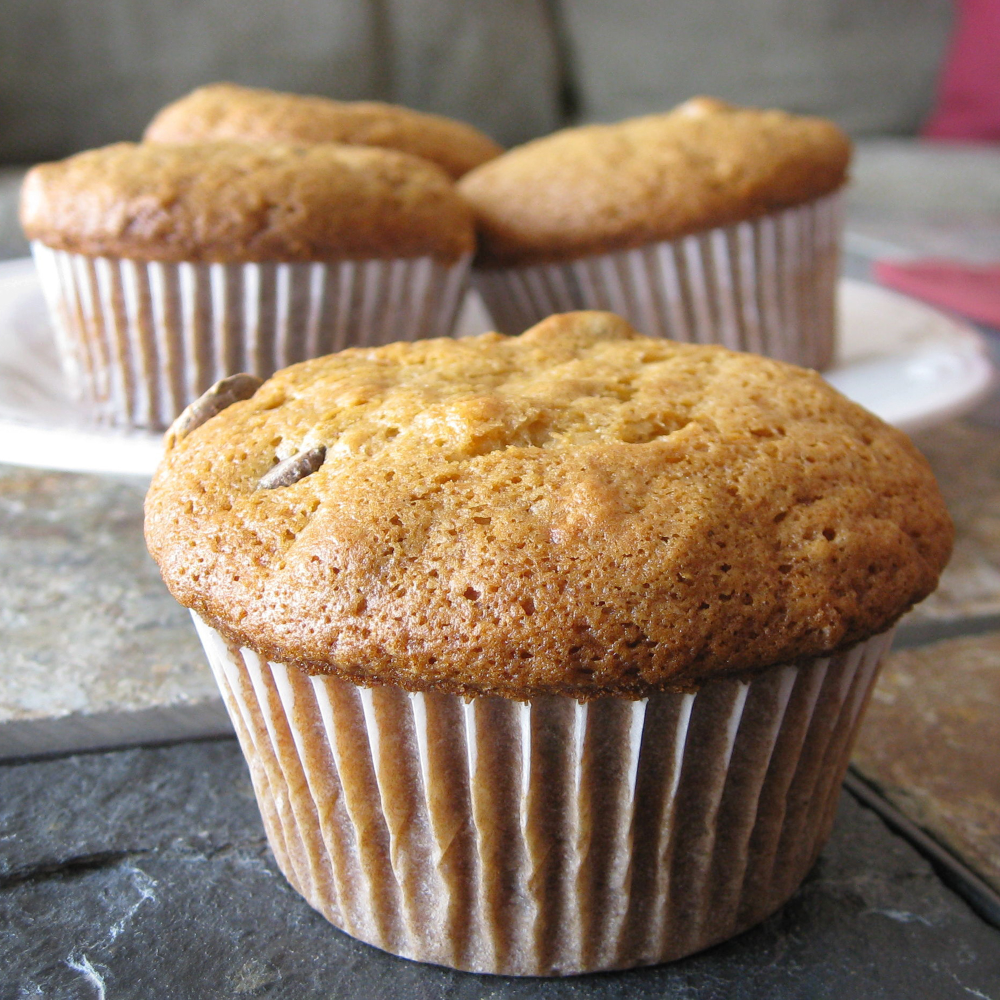

Banana muffins

Description
These delicious banana muffins are easy for kids to make.
- 1 ½ cups all-purpose flour
- 1 teaspoon baking powder
- 1 teaspoon baking soda
- ½ teaspoon salt
- 3 large bananas, mashed
- ¾ cup white sugar
- 1 egg
- ⅓ cup butter, melted
Steps
- Preheat oven to 350 degrees F (175 degrees C). Coat muffin pans with non-stick spray, or use paper liners.
Sift together the flour, baking powder, baking soda, and salt; set aside.
- Combine bananas, sugar, egg, and melted butter in a large bowl. Fold in flour mixture, and mix until smooth.
Scoop into muffin pans.
- Bake in preheated oven. Bake mini muffins for 10 to 15 minutes, and large muffins for 25 to 30 minutes.
Muffins will spring back when lightly tapped.